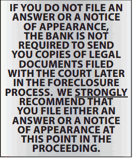

Once you receive the Summons and Complaint you can file an “Answer” or a “Notice of Appearance”. If you were personally served the Summons and Complaint (typically done by a “process server”, who is a 3rd party that is hired by the Bank’s attorneys to deliver legal documents), you have 20 days to file an Answer. If the Summons and Complaint were left on your door, you should also receive a copy in the mail. If this method of delivery is used, you have 30 days to file an Answer.
An Answer is a written response to the Complaint. It does not HAVE to be filed by you – it is optional. You typically would file an Answer only if you have legal claims against the Bank. If you simply fell behind on payments and were not able to catch up, filing an Answer is often not necessary. An Answer typically contains a paragraph-by- paragraph response to each paragraph in the Complaint.
In addition, the Answer is where you would raise any “counterclaims” against the Bank. Counterclaims are simply legal claims you have against the Bank. The Answer is where you can tell the Court any ways that you think the Bank may have violated your rights. If you have claims against the Bank and you do not file an Answer, you may be waiving your right to bring these issues up in the future.
If you wish to file an Answer, please refer to the separate section in this guidebook entitled “Filing a Pro Se Answer”, located toward the back of this guidebook.
A “Notice of Appearance” is a document filed with the Court that alerts the Court that you are an active participant in the foreclosure proceeding. By filing a Notice of Appearance, you are telling the Court that you want copies of all future legal documents related to the foreclosure to be sent to you. (If you have chosen to file an Answer, you automatically have made this request and do not need to file a Notice of Appearance.) If you wish to file a Notice of Appearance instead of an Answer, please refer to the separate section in this guidebook entitled “Filing a Notice of Appearance”, located toward the back of this guidebook.
Regardless of whether you file anything with the Court, you still have the opportunity to participate in the Settlement Conference process.